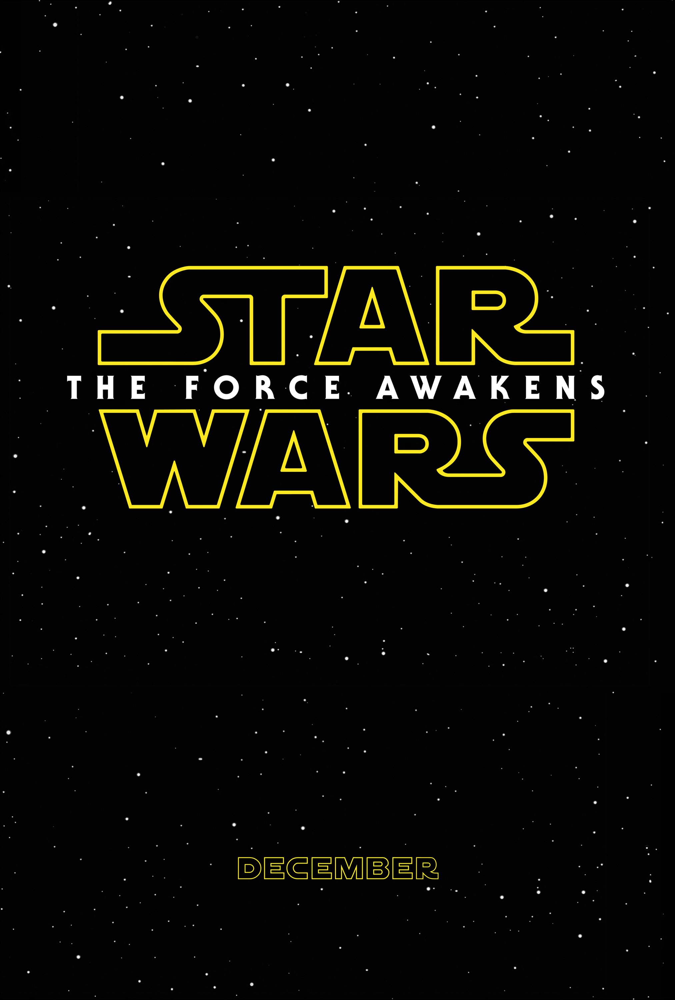

Approximately 30 years after the destruction of the second Death Star, Luke Skywalker, the last Jedi, has disappeared. The First Order has risen from the fallen Galactic Empire and seeks to eliminate Luke and the Republic. The Resistance, backed by the Republic and led by Luke's twin sister, General Leia Organa, opposes them while searching for Luke to enlist his aid. Resistance pilot Poe Dameron meets village elder Lor San Tekka on the planet Jakku to obtain a map to Luke's location. Stormtroopers under the command of Kylo Ren destroy the village and capture Poe. Poe's droid BB-8 escapes with the map, and encounters a scavenger, Rey, at a junkyard settlement. Ren tortures Poe and learns of BB-8. Stormtrooper FN-2187, unable to kill for the First Order, frees Poe and they escape in a stolen TIE fighter; Poe dubs FN-2187 "Finn". They crash on Jakku, and Finn appears to be the only survivor. He encounters Rey and BB-8, but the First Order tracks them and launches an airstrike. Finn, Rey and BB-8 flee the planet in a stolen, rundown ship, the Millennium Falcon. The Falcon breaks down, and is captured by a much larger ship, piloted by Han Solo and Chewbacca, who reclaim their former vessel. Gangs seeking to settle debts with Solo board the ship and attack, but the five escape in the Falcon. The gangs inform the First Order of Han's involvement. At the First Order's Starkiller Base, a planet converted to a superweapon capable of destroying star systems, Supreme Leader Snoke orders General Hux to use the weapon for the first time. Snoke also questions Ren about the involvement of his father, Han Solo; Ren protests that Han means nothing to him. The Falcon crew view BB-8's map and determine it is incomplete. Han explains that Luke tried to rebuild the Jedi Order but went into exile after an apprentice turned to the dark side and destroyed all that Luke had built. They travel to the planet Takodana and meet with cantina owner Maz Kanata, who can help BB-8 reach the Resistance, but Finn wants to flee on his own. Rey is drawn to a vault and finds the lightsaber that belonged to Luke and his father Anakin Skywalker before him. She experiences disturbing visions and flees into the woods. Maz gives Finn the lightsaber for safekeeping. Starkiller Base destroys the Republic capital and fleet. The First Order attacks Takodana in search of BB-8. Han, Chewbacca, and Finn are saved by Resistance X-wing fighters led by Poe, but Rey is captured by Ren and taken to Starkiller Base. Ren interrogates Rey about the map, but she resists his mind-reading. Discovering she, too, can use the Force, she escapes her cell with a Jedi mind trick. Leia arrives at Takodana with C-3PO and reunites with Han and Chewbacca. At the Resistance base on D'Qar, BB-8 finds R2-D2, who has been inactive since Luke's disappearance. As Starkiller Base prepares to fire on D'Qar, the Resistance devises a plan to destroy it by attacking a critical facility. Leia urges Han to return their son alive. Using the Falcon, Han, Chewbacca, and Finn infiltrate the base. They lower its shield, find Rey, set explosives, and encounter Ren. Han confronts Ren, calling him by his birth name, Ben, and implores him to abandon the dark side. Though conflicted, Ren kills Han. Enraged, Chewbacca shoots Ren in the side and sets off the explosives, allowing the Resistance X-wing fighters to attack and start a chain reaction that destroys Starkiller Base. The injured Ren pursues Finn and Rey to the surface. Finn battles Ren with the lightsaber, but is overpowered and badly wounded. Rey takes the lightsaber and fights Ren, overpowering him with the Force before they are separated by a fissure. Snoke orders Hux to evacuate and bring Ren to him, while Rey and Chewbacca escape with Finn in the Falcon. On D'Qar, the Resistance celebrates while Leia, Chewbacca, and Rey mourn Han's death. R2-D2 awakens and reveals the rest of the map, which Rey follows with R2-D2 and Chewbacca to an island on a distant planet. She finds Luke and presents him with his lightsaber.
Star Wars
